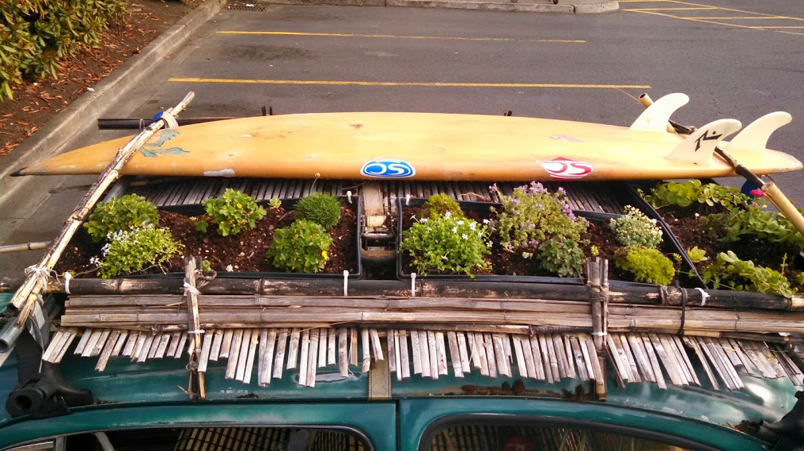
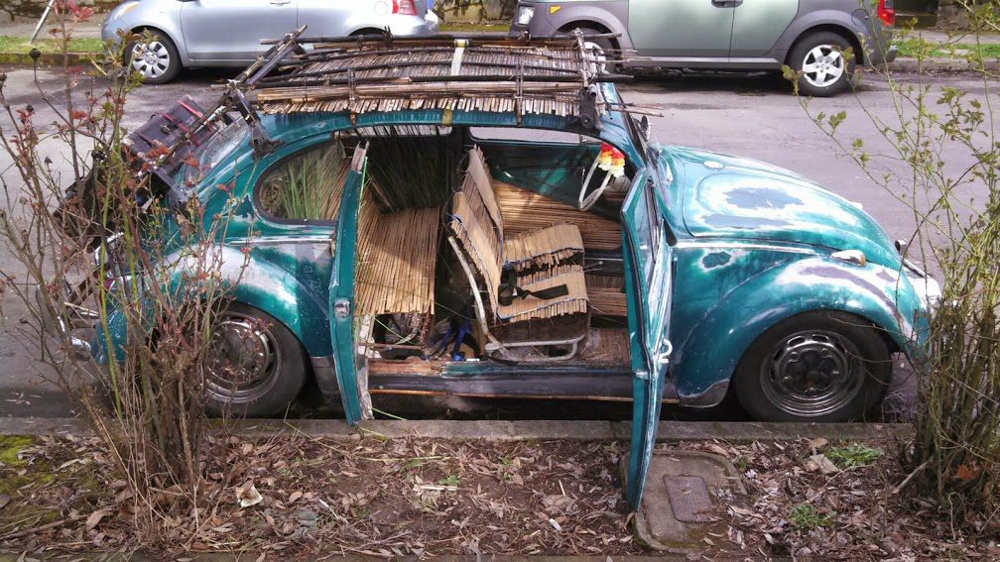
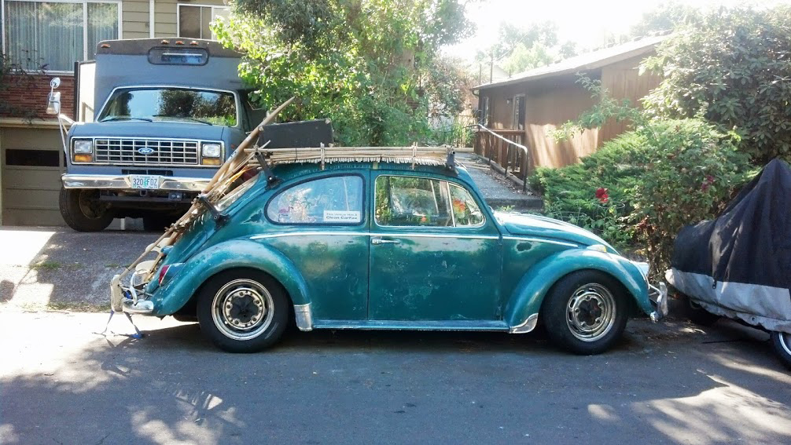
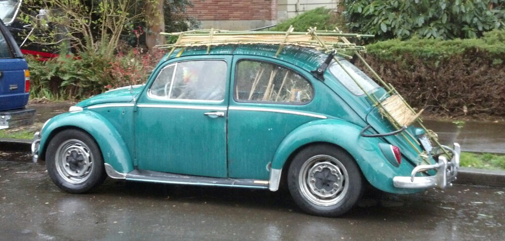
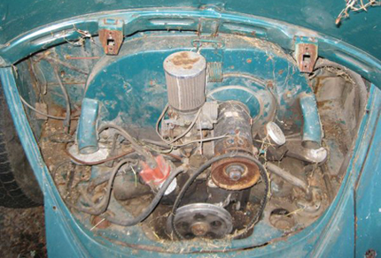
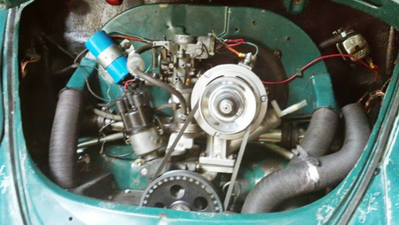
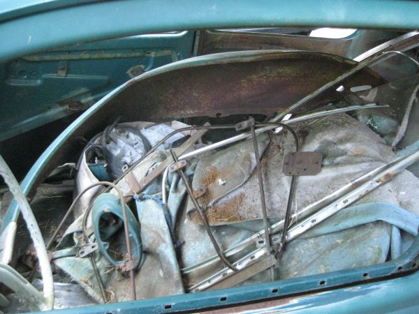
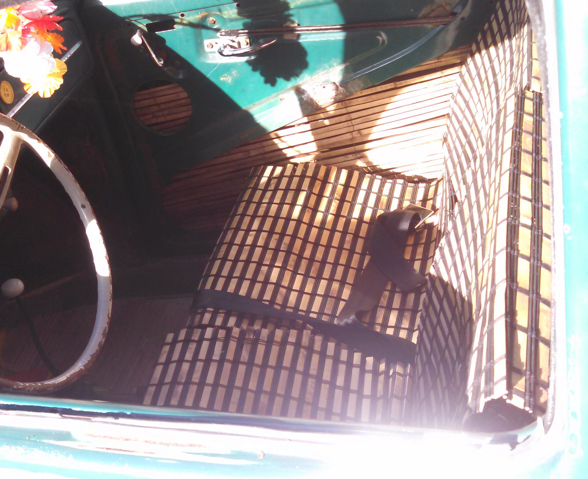

Do Not Do It Yourself
Do Not Do It Yourself
Purpose of project is to build a biomass gasifier and run the vehicle on wood chips, garbage, bannana peels, used motor oil or whatever is available.
After last biomass failure I go back to the books. I think maybe a downdraft style gasifier may be a better option, I think I need a circular combustion chamber too. I also want to raise comustion temperature to the point it also cracks the tars.
Original concept was to have a fermentation tank on back of car making gross beer, then have a vacuume operated combination still heating solution and lowering boiling temperature. The vaporized alchohol would be sucked directly in engine for burning.
I converted vehicle to alchohol, started to drive around, had a prototype distilling device working, ran car on beer for a bit, had and issue with manifold vacuume lowering upon accel and raising boiling temperature. Soulution was a venturi valve. Kept ironing out bugs on system.
At this point with the vehicle almost running, I discovered the concept of gasifiaction. I was like...bro! Why am I making a complex fermentation distilling system when I could just throw everything directly in car for burning? I did some research and made my own first draft of the gasifier.
It consisted of two ammo cartridges from a military surplus, a large barrel, and misc hardware pieces. Idea was to let a small amount of air into burner can to burn and produce heat. There was a diesel glow plug for starting ignition/cooking of biomass and a temp gauge from a barbecue. The extreme heat in the can combined with a lack of oxygen would break the biomass down into hydrogen, carbon monoxide, ash, and other misc things like tar. The resulting gas would be sucked by the nautral vacuum of the engine into the barrel which was filled with water, using bong action, tars and solids would get filtered out, gas would cool and be sucked into engine for burning.
I decided to fire this baby up for the first time...it worked! I let it idle observing burner temperature, making minor adjustments. After 30 minutes I decided that I was going to hop inside and see how well it drove. I ran like crap, and made it maybe three blocks, then I hear this odd crunching noise from the roof and the engine stops. I get out, and imediately see problem...the vacuume pressure from the engine collapsed the barrel bong. This subsequently sucked water into the engine and it seized. Oops!
I pull engine and take it apart. All tubes were caked with tar from just 30 minutes of use. The incompressable nature of water and the squeezing action of a pistion didn't jive very well, but I got lucky, the pushrods were the point of failure. I spend 15$ on parts, and put it back together, reverting system back to alchohol. For the next few weeks, wherever I drive it smells like a campfire as the residual tar burns away.
Pulled some bambooo from backyard, fashioned some seats, and a roof rack. Put sand on floor to give it a beachy feel inside. Took a reciprocating saw and cut a 3rd door. General cleaning. Put planter on roof. I have difficulty keeping plants alive.
   First order of business was to make the vehicle run, I cleaned it up and restored the engine, among other things, converted system from 6 to 12 volts. I also splurged on a degree pulley to easily advance timing, then jetted the carborator so it would run well on alchohol. A before and after of the engine compartment, and interrior
   Vehicle was originally purchased in battleground washington for around 450$, including tow. Craigslist add said it would be good for a parts car, but when I came to look at it...there weren't any good parts. Last known registration was in 1998 when it was donated to the Salvation Army, and the Salvation Army decided it was not worth fixing, but instead, sold it to the gentleman who sold it to me. As far as I could tell it had been sitting outside since then with no windows, car was full of water and interior had rotted out.
I will save you from the boring restoration details.